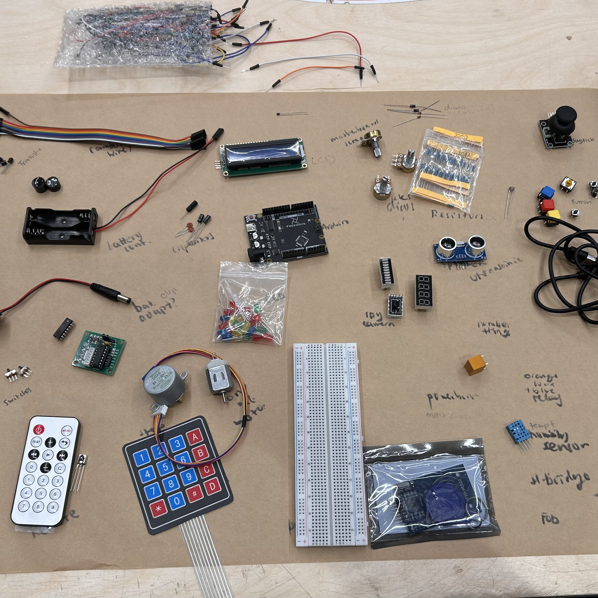
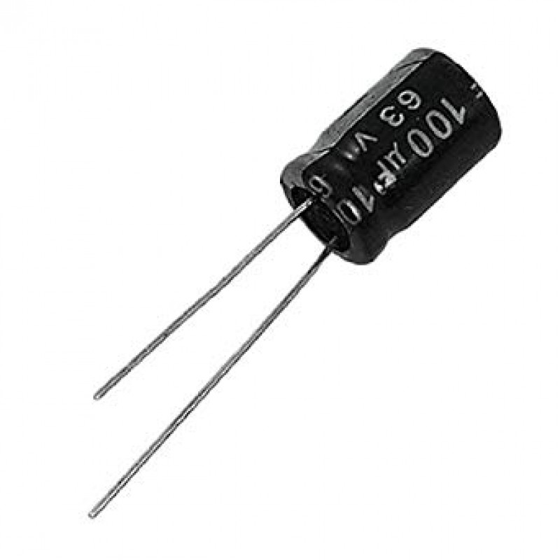
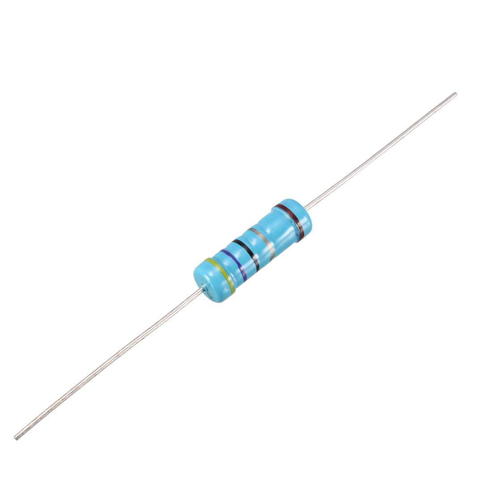
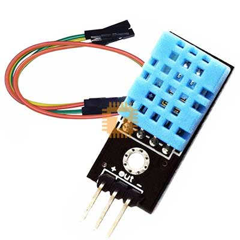
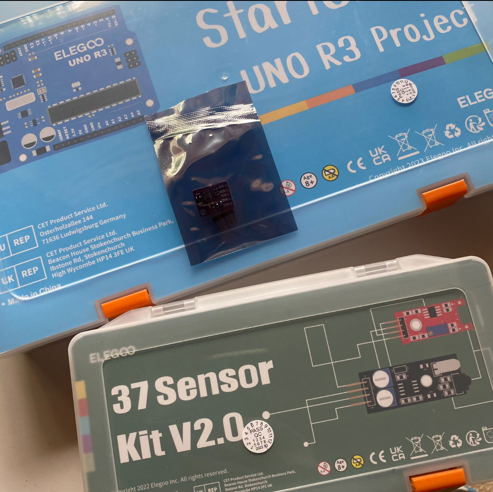

Arduino Box contents overview
When unpacking the box I realised just how many different moving parts there are to physical computing. Even simple movement
seems like it would require alot of different pieces. We guessed at some, and then labelled all the items with their correct names. It makes me
appreciate how much technology is in the things we use regularly like phones or speakers.

Ultrasonic Sensor
The ultrasonic sensor is one of the first components we worked with. I initally thought they were speakers,
but it actually uses SONAR waves to sense the distance of objects around it. It reminds me of echolocation like used by
bats.

Capacitors
Capacitors sounded very complex and only reminded me of the 'flux capacitor' in Back to the Future. Capacitors
are used to process and store the energy from a power supply. They are important to keep energy levels stable. There are different types of
capacitors that can be used for different things. They also have different length legs.
Resistors
The first thing I noticed about resistors is the fact they can come in a variety of types, with different coloured
patterns on them. I learnt from extra research that these colours actually have meanings and correspond to mathmatical formulas to
determine its type. Resistors are used to create electrical resistance and reduce the flow of electricity, as well as other things.

Temperature and humidity sensor
After alot of research and looking at numerous examnple Arduino projects, it is clear that the temperature and humidity sensor is
by far one of the most used sensors in the original box. Many weather projects and plant based moisture projects are common for beginner Ardunio projects.

Buying my own Arduino kit
As I wasn't super comfortable with the idea of the Arduino yet, I decided to order my own arduino kit. Though I'm not sure
how much I'll use it in the future it was definitely interesting and made me feel more comfortable when learning about it in class. I also watched
alot of Youtube videos to learn more about projects. Also, my sister's partner turns out to be really into this physical computing and told
me about a functional 3D printer he made with an Ardunio!

Arduino Box contents overview
When unpacking the box I realised just how many different moving parts there are to physical computing. Even simple movement seems like it would require alot of different pieces. We guessed at some, and then labelled all the items with their correct names. It makes me appreciate how much technology is in the things we use regularly like phones or speakers.
Ultrasonic Sensor
The ultrasonic sensor is one of the first components we worked with. I initally thought they were speakers, but it actually uses SONAR waves to sense the distance of objects around it. It reminds me of echolocation like used by bats.
Capacitors
Capacitors sounded very complex and only reminded me of the 'flux capacitor' in Back to the Future. Capacitors are used to process and store the energy from a power supply. They are important to keep energy levels stable. There are different types of capacitors that can be used for different things. They also have different length legs.
Resistors
The first thing I noticed about resistors is the fact they can come in a variety of types, with different coloured patterns on them. I learnt from extra research that these colours actually have meanings and correspond to mathmatical formulas to determine its type. Resistors are used to create electrical resistance and reduce the flow of electricity, as well as other things.
Temperature and humidity sensor
After alot of research and looking at numerous examnple Arduino projects, it is clear that the temperature and humidity sensor is by far one of the most used sensors in the original box. Many weather projects and plant based moisture projects are common for beginner Ardunio projects.
Buying my own Arduino kit
As I wasn't super comfortable with the idea of the Arduino yet, I decided to order my own arduino kit. Though I'm not sure how much I'll use it in the future it was definitely interesting and made me feel more comfortable when learning about it in class. I also watched alot of Youtube videos to learn more about projects. Also, my sister's partner turns out to be really into this physical computing and told me about a functional 3D printer he made with an Ardunio!